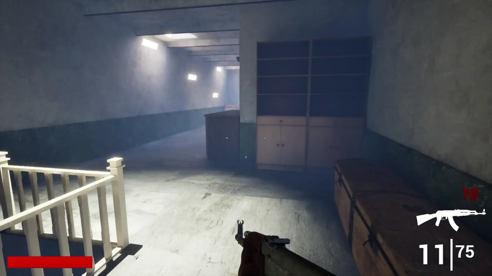
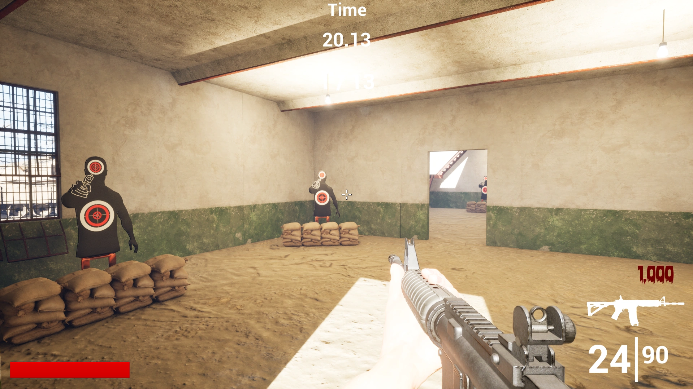
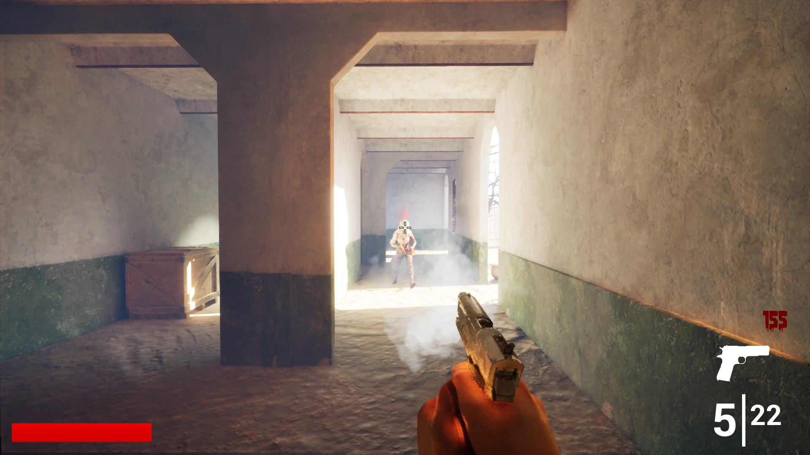
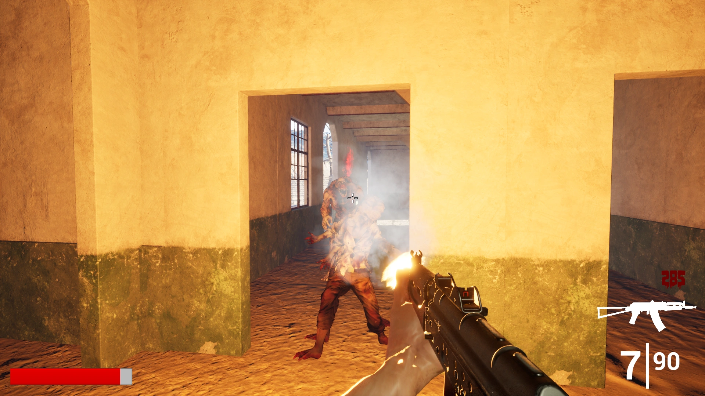
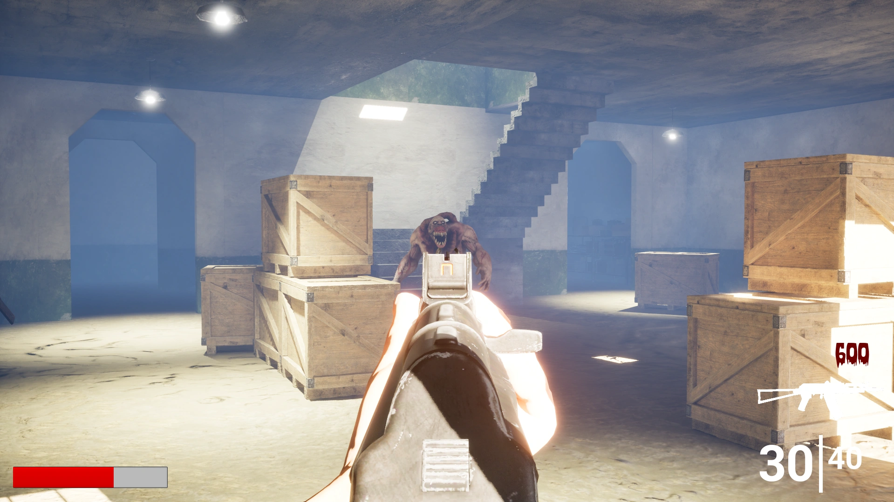

Deserted is a first person survival shooter game. It consists of two levels, one is a shooting range which introduces the player to the basic mechanics of the game, such as movement, sprinting, crouching, shooting, reloading, etc. The second level is a zombie survival level, where the player has more freedom to move around the map while fighting off hordes of zombies. The player will gain points as they fight for survival and can spend those points to purcahse other weapons and/or replenish ammo.
Unreal Engine 5, Blueprints, Animation Blueprints, Blender
Windows
Less than 8 weeks
Solo Developer


